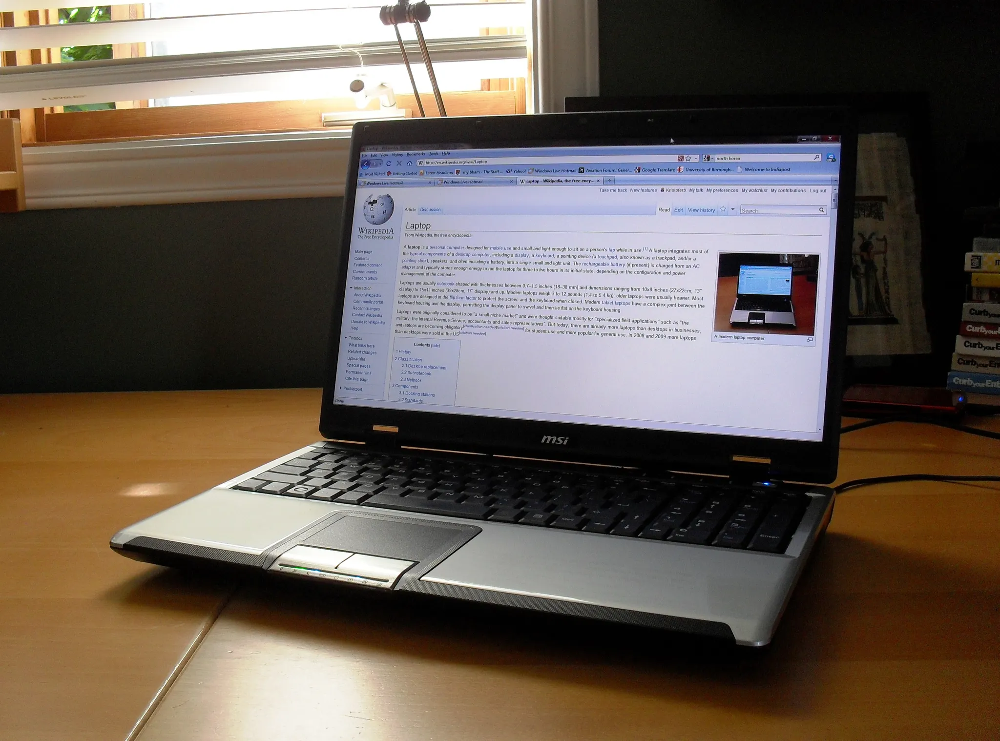
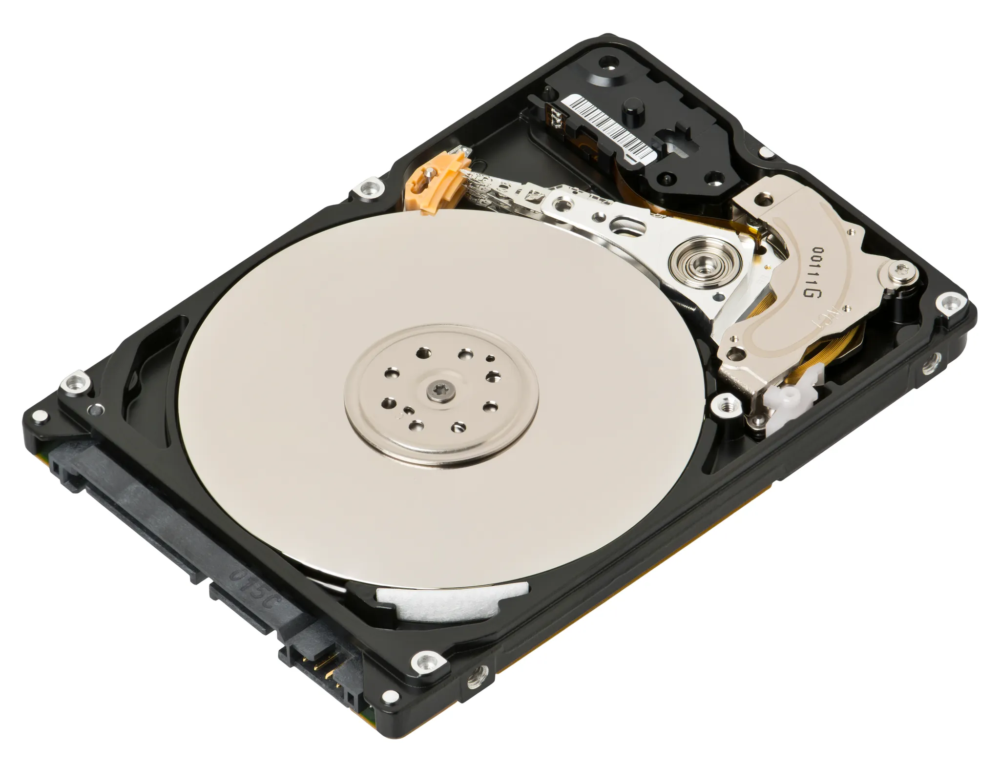
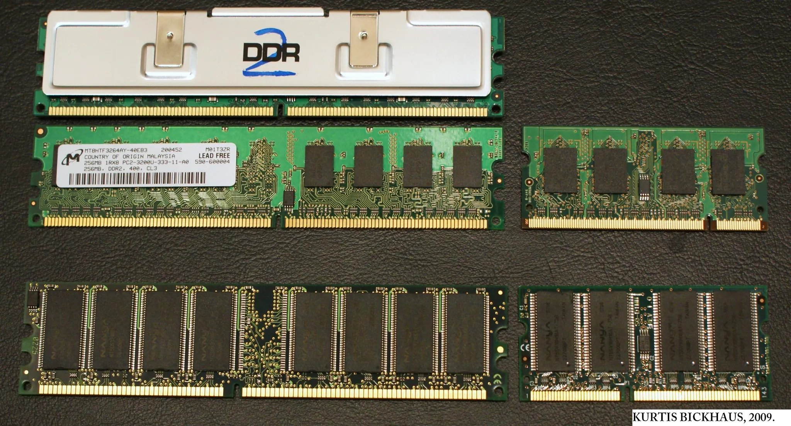
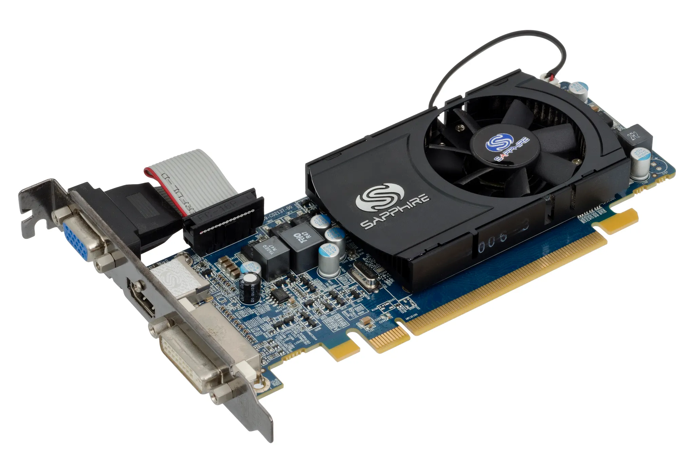
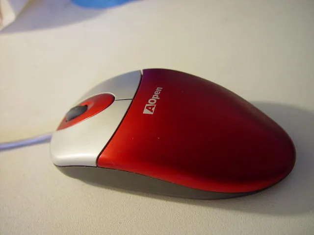
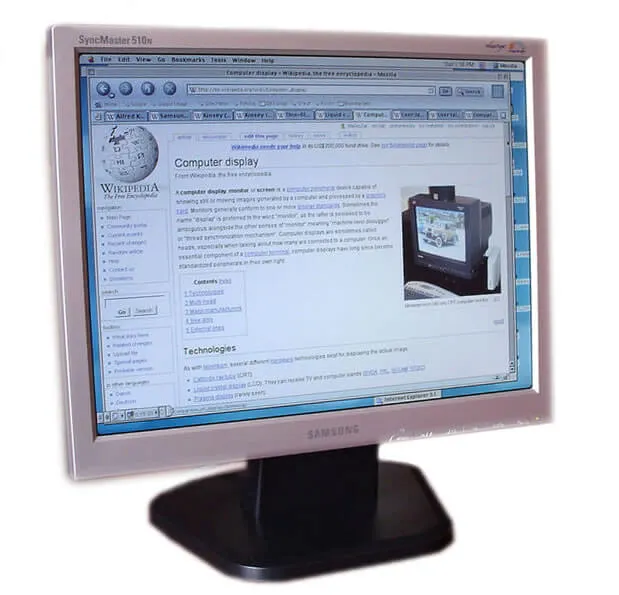
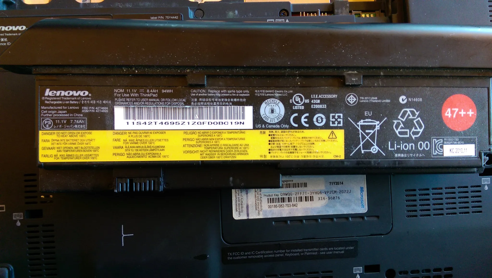
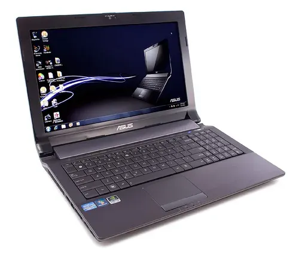

Hola, soy Nicolás y, al igual que tú, he estado aprendiendo sobre cómo mejorar mi conexión a internet. No soy un experto en el tema, pero buscando en internet, tutoriales y aprendiendo de la prueba y el error he logrado mejorar la calidad del internet en zonas sin buena conectividad.
¿Qué es cómo comprar un computador para ti?
En esta solución podrás aclarar algunas cosas importantes para tomar la decisión. Por un lado, diferenciar las características principales de un computador y una serie de recomendaciones con base en estas características. También podrás tener en cuenta para el análisis tus necesidades y capacidades. Espero que puedas sentirte acompañado y seguro a medida que avanzas en la selección de un computador.
¿Para qué sirve?
Tomar un decisión sobre una compra en temas en los cuales no somos expertos puede ser un ejercicio difícil. Por esto, hemos desarrollado esta solución que sirve para acompañarte en este proceso. Al final esta solución sirve para que puedas tomar una decisión informada y no gastes dinero de más o termines comprando un computador que no satisface tus requerimientos.
¿Cómo saber si lo necesito?
Saber si necesitas, o no, realizar una compra, pasa por dos criterios fundamentales:
- Reflexiona de manera profunda y meditativa si lo necesitas, para esto pregúntate: ¿Qué necesidad esta solucionando la compra de un computador?, ¿Esta necesidad se puede solucionar de otra manera? Por ejemplo, ¿puedes hacer lo mismo con el celular que tienes actualmente, o quizá, con una tablet?
- Si ya corroboraste que la necesidad que te planteas sólo se soluciona con el acceso a un computador, es hora de mirar otras alternativas antes de la compra. Por ejemplo ¿Puedes pedir un computador prestado en el colegio o la biblioteca?, ¿Puedes conseguir un equipo donado de un familiar o una empresa?
Si agotaste las opciones anteriores y, definitivamente, decidiste comprar un computador, esta solución es la indicada para ti.
¿Qué ventajas tiene un computador en comparación con un celular?
La velocidad y la capacidad son dos de las grandes ventajas que tienen las computadoras en comparación con los teléfonos. Con una computadora, tienes un teclado y un ratón a tu disposición, lo que te permite escribir y navegar por los menús mucho más rápido. Además, la pantalla más grande de una computadora te permite organizar tu espacio digital de una manera que la pantalla de un teléfono pequeño no puede. También te permitirá
Estos factores no solo te ahorran tiempo; también te permiten realizar múltiples tareas. En una computadora, puedes cambiar más fácilmente entre aplicaciones e incluso tenerlas cómodamente en la pantalla al mismo tiempo. Por ejemplo, puedes tener una ventana abierta con tu hoja de vida y otra abierta con un trabajo que estés buscando. O si estás buscando la mejor oferta, puedes tener páginas de varios productos abiertas al mismo tiempo para compararlos fácilmente.

¿Qué opciones existen?
- Computador de escritorio
Este es un computador diseñado para ser instalado en una ubicación estática, como un escritorio o mesa. Los componentes del hardware suelen ser una caja de computadora que alberga la placa base con los respectivos componentes.

- Computador portátil
Tan solo llamado portátil, este es una computadora que se puede mover o transportar con relativa facilidad. Los portátiles son pequeños, livianos y están especialmente diseñadas para que sus baterías sean capaces de alimentarlas durante un período prolongado de tiempo (generalmente de 4 a 5 horas). La medida de las pantallas van de las 11 a las 15 pulgadas.

- Pros y contras
| Categoría | Escritorio | Portátil |
|---|---|---|
| Portabilidad | Esta en una ubicación fija. | Puede ser trasportado con facilidad. |
| Costo | Es más económico. | Es más costoso. |
| Actualización y Personalización | Sus componentes de hardware pueden actualizarse y mejorarse con facilidad. Esto facilita personalizarlo a tus necesidades. | Cada vez es más difícil actualizar sus componentes de hardware, ya que la mayoría vienen integrados. En algunos se puede cambiar la memoria RAM y el disco duro. |
| Independencia energética | Debe estar conectado siempre a una fuente de alimentación eléctrica | Al tener batería puede estar desconectado por unas horas de una fuente de alimentación eléctrica, sin embargo con el tiempo esta batería se desgasta y dura menos tiempo hasta que es necesario cambiarla. |
| Gasto energético | Consumen más energía | Consumen menos energía ya que sus componentes son más compactos. |
| Espacio | Ocupan más espacio. | Ocupan poco espacio. |
¿Qué debo tener en cuenta para tomar esta decisión?
Paso 0 → Antes de empezar: ¡ALERTA! ¿Qué es el hardware y el software?
Esto es importante saber que hay dos componentes básicos en un computador: El Hardware → y el software:
- Hardware →: Es el conjunto de los componentes que integran la parte material de una computadora.
- Software: Es el conjunto de programas, instrucciones, datos y reglas informáticas para ejecutar ciertas tareas en una computadora.
A continuación te explicaremos cuales son los principales componentes del hardware de un computador que son importante a la hora de comprarlo.
| Elemento | Imagen | Descripción |
|---|---|---|
| Procesador (CPU) → |  | Este es el cerebro de la máquina, sin duda uno de los factores fundamentales a tener en cuenta. Recuerda que según la potencia de este elemento el equipo podrá ejecutar más rápido las instrucciones que le des. |
| Almacenamiento |  | El disco duro → marca la capacidad de almacenamiento de tu equipo. |
| Memoria RAM |  | La memoria RAM → almacena de forma temporal los datos de las aplicaciones que se están ejecutando. Cuanta más memoria RAM tenga tu computador, mayor capacidad para ejecutar diferentes programas a la vez de forma óptima. |
| Trajeta gráfica |  | La tarjeta gráfica se encarga del procesamiento de datos relacionados con imágenes y vídeos que se reproducen en el computador. |
| Periféricos |  | Se refieren al los accesos de entrada y salida de otros dispositivos que conectarás a tu computador. Por ejemplo: puertos Conexión USB →, Salidas de audio, conexiones HDMI, etc. |
| Pantalla |  | Es la que te permite ver lo que estas realizando en tu computador. |
| Batería |  | Solo aplica para portátiles y determina el tiempo de uso del que dispones sin estar conectado a la corriente. |
Paso 1 → Los criterios fundamentales
Ahora, ya que conoces cada uno de los principales componentes del hardware te contaremos cuales son las características que diferencian su rendimiento, costo y las preguntas que debes hacerte para escoger una u otra opción.
| Elemento | Detalle | Preguntas relevante |
|---|---|---|
| Procesador | Si buscas un ordenador rápido, que realice las tareas de forma efectiva y sin ponerse lento, hay que tener en cuenta la cantidad de núcleos. Además, debe detallarse la frecuencia o velocidad de trabajo. A mayor número mejor rendimiento este factor se mide en Ghz (gigahercios). Así que 3Ghz es mucho mejor que un 2.5 Ghz. En cuanto a marcas esta es la recomendación: Si puedes pagarlo, opta por un Intel; si necesitas algo más barato, un AMD. Y si andas realmente ajustado de dinero, elige un Celeron. | ¿Cuántos programas puedes utilizar al mismo tiempo? ¿Qué actividades realizaras con tu computador, vas a diseñar modelos, explorar en internet jugar? ¿Intel o AMD? ¿Cuántos núcleos? |
| Almacenamiento | 500 GB es más que suficiente para un uso casero “normal”. Si eres de guardar películas, series, etc, puede ser necesario que elijas un disco duro de 1 TB (terabyte) o superior. La velocidad también es fundamental. Se mide en revoluciones por minuto (rpm) a mayor velocidad mejor será la lectura y escritura de datos. Actualmente existen dos tecnologías diferentes: El disco duro tradicional (HDD), que es más lento, pero más económico. El otro es el disco de estado sólido (SSD), más rápido pero más costoso. | ¿Unidad de estado sólido o disco duro?, ¿Cuánta información vas a guardar? ¿Quiero que el computador prenda rápidamente? |
| Memoria RAM | Cuanta más memoria RAM tenga tu computador, mayor será su capacidad para ejecutar diferentes programas a la vez de forma óptima. Calcular cuánta memoria RAM necesitas para tu equipo está 100% relacionado al tipo de uso que le das. Mientras más programas utilices (como programas de diseño, edición, entre otros), necesitarás un mayor número. Si vas a usar programas de diseño, videojuegos o simplemente tienes el dinero y quieres un computador muy rápido compra 16GB; si tu uso es para labores convencionales (escribir, navegar, etc) 8 GB serán suficientes; si no tienes mucho presupuesto debes confórmate con 4 GB y estar dispuesto a que el computador no sea muy veloz. | ¿Qué programas voy a usar?¿Cuántos GB necesito? |
| Tarjeta gráfica | Puede ser un factor importante o no dependiendo el uso que le vayas a dar, si en tu caso solo lo necesitas para tareas básicas uso estándar, funciona cualquier tarjeta gráfica. Pero, si requieres trabajo gráfico o gaming, es ideal una tarjeta gráfica dedicada. No te compliques la vida. Para un uso estándar no necesitas una tarjeta gráfica espectacular. Cualquiera de las marcas Radeon o Nvidia te dará un gran servicio. | ¿Voy a usarlo para videojuegos o programas de diseño? ¿Nvidia y Radeon? |
| Pantalla | La interacción con un pantalla es cada vez más recurrente, por esto es importante que te de comodidad y cuide tu vista, para esto debemos tener en cuenta: Tamaño: Si necesitas llevar el equipo de un lado a otro, lo ideal es 14 pulgadas, pero si tu finalidad es trabajo gráfico necesitas un mayor tamaño. Resolución: De nada te sirve comprar una pantalla grande con una mala resolución. A partir de 1080 es full HD y es una resolución bastante buena. Se recomiendan monitores de hasta 23’’ para evitar el efecto pixelado que provocan las imágenes con poca resolución. | ¿Cuántas pulgadas necesito?, ¿Qué resolución es suficiente para mis requerimientos?, ¿Necesitas manejar varios programas y al mismo tiempo diseñar o ver tus películas favoritas? |
| Audio | Este dependerá de los parlantes que compres para el caso de un computador de escritorio, en los portátiles esta característica no es su fuerte, pero regularmente los computadores tipo “gamer” vienen con un gran sonido. | ¿Necesitas un sonido extraordinario para tus fiestas o para ver películas o ya tienes un parlante grandioso que puedes conectar a tu computador? |
Paso 2 → Tomemos la decisión
Ahora que ya sabes los elementos fundamentales es hora de tomar un decisión, para esto hemos desarrollado una serie de preguntas sencillas, que, dependiendo de tu respuesta te recomendaríamos una u otra característica del hardware:
- Criterio 0: Establece un presupuesto
¡Ahora es tiempo de definir un presupuesto!, para esto puedes hacer las cuentas de cuantos días de trabajo al mes representa comprar este computador. Finalmente, la decisión recaerá sobre este punto, fácilmente esta compra puede significar más de un mes de trabajo, por lo que muy importante tratar de estar lo más informado posible antes de decidir.
- Criterio 1: Hábitos de uso
Ahora recordemos algunas de las preguntas más relevantes a la hora de definir nuestro hábitos de uso:
- ¿Necesito que el computador sea portátil o prefiero usarlo en un solo lugar?
- ¿Voy a usarlo para videojuegos y programas de diseño o para labores de ofimática?
- ¿Cuánta información vas a guardar?
- ¿Necesito usar varios programas al tiempo?
Con estas preguntas y tu presupuesto ya puedes decantar por un listado más reducido de opciones. escoge sabiamente.
No te dejes engañar
Es importante recordar que al ir a una tienda un vendedor normalmente busca meternos por los ojos el “producto estrella”, sin embargo muchas veces el costo de los computadores de hace 6 meses o un año son significativamente inferiores a las tecnologías de ese momento. A veces, puedes encontrar computadores de segunda que han estado en buenas manos y hacer un buen negocio. Por otro lado, solo me queda recomendarte que si es posible compres un computador de escritorio o un portátil que permita actualizar su hardware.
El computador desde el que te estoy escribiendo lo compré hace 13 años, ha pasado por cambio de disco duro y aumento de RAM, además de unos cuantos arreglos, pero ahorita funciona bien y ha sido una gran inversión para largo plazo.
Por ultimo, recuerda que ahora es muy fácil encontrar páginas y personas dedicadas exclusivamente a hacer reseñas y evaluar el rendimiento de los computadores, además algunas páginas te permiten comparar entre varias opciones, una vez hayas seleccionado los computadores disponible en el mercado que más se justan a tu caso utiliza estas páginas y los comentarios de los usuarios para tomar una decisión más certera.
Otra recomendación que nunca sobra, es guiarse por la reputación de la marca y del vendedor. En mi caso por experiencia recomiendo la marca ASUS en relación calidad-precio, aunque desde SOLE, también nos ha ido bien con la marca Lenovo.
¿Cuánto es suficiente?
Esta pregunta es difícil de responder, pero creo que la podemos reformular de la siguiente manera: ¿La opción que escogiste cumple con la necesidad y intención que proyectaste en un inicio? Para mi caso, hace 13 años compré un computador para la universidad, pero además que me permitiera jugar videojuegos, descargar y ver muchas películas. Es decir, yéndome por lo mínimo (que sirviera para la universidad) debería haber seleccionado un computador portátil, de poco peso, con buena batería, una pantalla pequeña, un procesador intermedio, 8GB de RAM y una tarjeta gráfica genérica. Sin embargo, hice todo lo contrario, seleccione un computador grande, pesado, de poca batería y con una tarjeta gráfica dedicada, lo que dirían un computador de “gamer”: El ASUS N53SV.
Al no meditar bien mi decisión termine comprando un computador demasiado grande y pesado para su transporte y con poca batería. Finalmente su función principal era que sirviera para la universidad, lo de las videojuegos y películas era algo secundario. En estos momentos aunque lo uso, casi no lo transporto, terminó siendo en la práctica un computador de escritorio. Por eso desde SOLE Voltaje, ¡no queremos que caigas en errores como el mío! Siempre recuerda que muchas veces “menos es más”.
Con esto que acabamos de ver, ya no te pueden meter los dedos a la boca, ¡es hora tomar la decisión!

Soluciones relacionadas
- ¿Cómo conseguir equipos donados? →
- El internet en una caja: Big Box de Jangala →
- ¿Cómo generar electricidad usando una bicicleta? →
Recuerda que en Voltaje ⚡⚡ puedes encontrar muchas soluciones más para conectarte sin miedo a usar el internet en grupo. ¡Anímate a seguir navegando! Ver más soluciones →
Referencias
- Alkosto
- Todotintasysuministros
- Promart
- Conquistainternet
- Wikipedia
- Wikipedia
- Compuline
- Multicopy.
- Impactomedia.
- Wikimedia
- Wikimedia
- Wikimedia
- Wikimedia
- Pcmag
- Felixwong
- Wrike
{kind=link}
{kind=link}
{kind=link}
{kind=link}